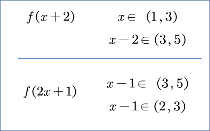

例子: 求值域 \(y=(2x+3)/(x-1)\) .
方向: 放回去, 就成了 \(2+5/(x-1)\) . ( \(y\neq 2\) )
这叫分离常数(dissociation constant(s)).
原理: 考虑平移. 先向右平移, 乘5倍, 再向上平移. 例子: 求值域 \(y=(3x-1)/(2x+1)\) .
为啥非得分离? 答案不是写在式子上吗?
例子2: $$ y={x^2+4x-5\over x^2+3x-2}. $$
求值域将会贯穿整个高中, 不止这些!
定义(映射): 一般地，设, \(A,B\) 是两个非空的集合，如果按某一个确定的对应关系 \(f\) ，使对 \(A\) 中的任意一个元素 \(x\) ，在集合 \(B\) 中都有唯一确定的元素 \(y\) 与之对应，那么就称对应 \(f\) 集合 \(A\) 到集合 \(B\) 的映射．映射 \(f\) 也可记为为 \(f:A\to B\) . (复制粘贴的, 供找不同使用).
定义(函数): 对于非空数集 \(A,B\) , 存在对应法则, \(f: A\to B\) .对于 \(\forall x\in A\) , 在 \(B\) 中存在唯一确定的 \(y\) 与之对应.写作 \(y=f(x)\) . 成 \(f\) 是定义在 \(A\) 上的函数.(复制粘贴的, 供找不同使用).
具体而言: 函数是特殊的映射(数到数的映射). 一些概念: 象(image)(中箭), 原象(preimage)(放箭) 那么, A集合的每个元素都是原象吗? B集合的每个元素都是原象吗?
分类: 一些战法
单射: 每个象只有一个原象. (每个人只中一箭). \(|A|\leq |B|\) .
满射: 每个B中元素都是象. \(|A|\geq |B|\) .
双射: (一一映射), 单射+满射. \(|A|=|B|\) .
看3.(1)(2)(3)
\(A=[a,b]; B=[c,d]\) 4个.
\(A=[a_1,a_2,\cdots,a_m], B=A=[b_1,b_2,\cdots,b_n]\) , 一共有 \(n\times n\times \cdots\times n = n^m\) .
找爸爸, 找妈妈是两个函数, 找妈妈的爸爸 \(\neq\) 找爸爸的妈妈一个误解:
更多练习: 如果 \(f(x+2)\) 定义域 \((1,3)\) , 那么 \(f(2x-1)\) 定义域是 \((2,3)\) . 更简洁的方法: 用虚线隔开. 
三句话:
看7(1)(2). 要前后两个函数的交集
$$ p(h(g(f(x)))) $$
看8. 答案: \(y\in (-\infty,3)\cup[4,+\infty)\)
一次, 二次, 反比例, 开根号的复合.
看10(1). \(a\geq 2/3\) , 没说在别的地方没意义.
(2)
(3) \(a>0, Δ≥0\) 或者 \(a=0\) , 解答 \([0,1]\) .
上升, 下降? ... "升降性"? "单调性". 升的快, 升的慢?... "折性"? "凹凸性". 这些共同之处叫做函数的性质.
小球在函数图像上有时候滚, 有时候不滚... "滚性"? 驻点 无限放大, 就可以化曲为直...
对称性. 按照轴, 中心, 一条直线对称?... (逐)渐(在接)近(的)线...
我们在下一节先了解: 单调, 对称性...
不要滥用! 例如在考试的时候使用. 仅供平时探索的时候使用.
教育除了知识的记忆之外, 更本质的是能力的训练, 即所谓的training. 而但凡training就必须克服一定的难度, 否则你就是在做重复劳动, 能力也不会有改变. 如果遇到难度就选择退缩, 或者让别人来替你克服本该由你自己克服的难度, 等于是自动放弃了获得training的机会, 而这其实是大学专业教育最宝贵的部分. -- etone, NJU
高中之后, 是大学.
我们都是活生生的人, 从小就被不由自主地教导用最小的付出获得最大的得到, 经常会忘记我们究竟要的是什么. 我承认我完美主义, 但我想每个人心中都有那一份求知的渴望和对真理的向往, "大学"的灵魂也就在于超越世俗, 超越时代的纯真和理想 -- 我们不是要讨好企业的毕业生, 而是要寻找改变世界的力量. -- jyy(蒋炎岩), NJU